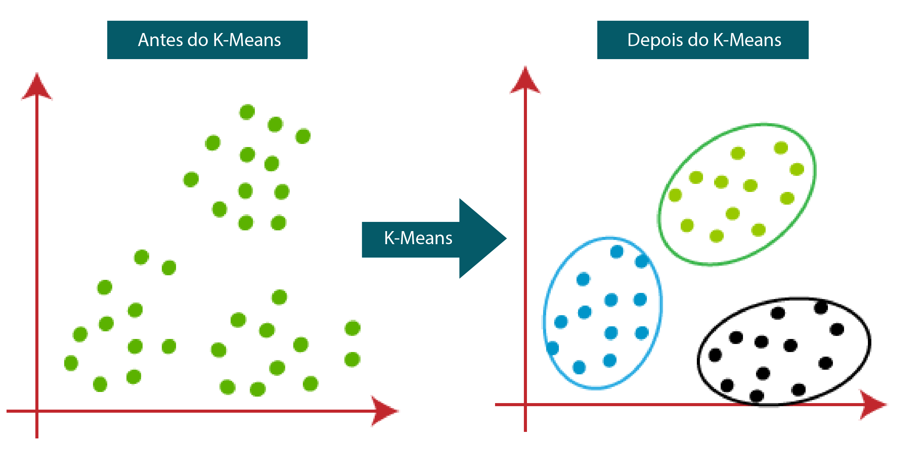
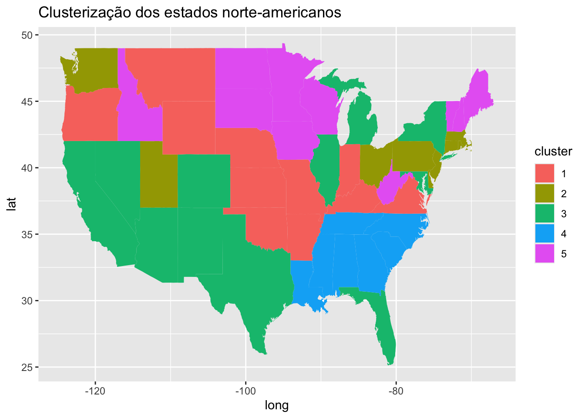
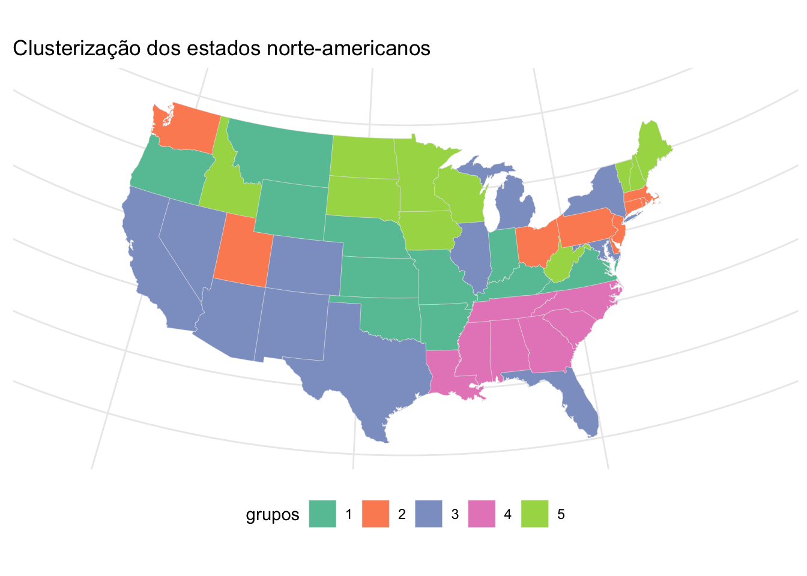

data("USArrests")
dados <- USArrests
dados_padronizados <- scale(dados)Uma breve introdução
Ao estudar uma população ou um conjunto de dados, é essencial entender previamente qual o propósito desse estudo. O que pretendemos responder com nossos dados? Isso norteará nossas perguntas e sustentará cada etapa desta análise.
Se buscamos encontrar padrões e classificar nosso conjunto de alguma forma, uma das primeiras perguntas que podemos fazer é: será que os elementos desse conjunto possuem semelhanças entre si? Se sim, será que essas semelhanças são suficientes para dividi-los em grupos?
Dentro do aprendizado de máquina (ou machine learning), uma ferramenta poderosa para nos auxiliar com essas respostas é a técnica de clusterização, do inglês clustering. Ela consiste em um modelo de aprendizado não supervisionado que utiliza técnicas computacionais para separar um conjunto de dados em grupos, baseando-se em suas características similares.
Mas afinal, o que é aprendizado de máquina?
Podemos definir aprendizado de máquina como um campo de estudo dentro da inteligência artificial que desenvolve algoritmos, com o objetivo de capacitar a máquina a aprender com os dados e identificar padrões. De certa forma, é como se estivéssemos ensinando nosso computador a replicar o pensamento analítico humano.
Podemos dividir o aprendizado de máquina em quatro subcategorias: aprendizagem supervisionada, semi-supervisionada, não supervisionada e por reforço. No caso da clusterização, a técnica se encaixa no modelo de aprendizagem não supervisionada. Esse modelo se caracteriza por utilizar conjuntos de dados não rotulados, ou seja, o modelo deve encontrar sozinho os padrões contidos nos dados, já que não há uma variável resposta.
Existem diversos algoritmos de clusterização, uma vez que cada problema pode exigir uma abordagem diferente baseado em suas características. No nosso caso, utilizaremos o algoritmo chamado K-means. Esse modelo consiste no particionamento dos elementos em k grupos (clusters), em que cada observação pertence ao grupo com a média mais próxima.

Aplicação utilizando o conjunto USArrests
Agora que já entendemos o que é aprendizado de máquina e o que é clusterização, aplicaremos esse conhecimento utilizando o conjunto de dados USArrests. Este conjunto de dados está disponível na biblioteca nativa do R e tem informações sobre as taxas de prisões por crimes violentos em cada estado dos Estados Unidos em 1973.
Primeiro, importamos o conjunto de dados e o salvamos em um dataframe que chamaremos de dados. Depois de importar, precisamos fazer a padronização dos dados, ou seja, colocar todas as variáveis na mesma ordem de grandeza. Para isso, usamos a função scale.
Com os dados devidamente padronizados, agora podemos aplicar o algoritmo K-means e dividir nosso conjunto em clusters (grupos). A função que usaremos para isso se chama kmeans() e possui os seguintes argumentos:
‘x’: conjunto de dados a ser agrupado (dataframe ou matriz);
‘centers’: número de clusters desejado (‘k’);
‘iter.max’: número máximo de iterações ;
‘nstart’: número de vezes que o algoritmo será executado com diferentes pontos de partida (aleatórios).
Para esse conjunto de dados, tomaremos nosso ’k’ como 5, o número de iterações como 20 e ’nstart’ como 50.
clusterizacao <- kmeans(x = dados_padronizados, centers = 5, iter.max = 20, nstart = 50)
clusterizacaoEsse código nos retorna as principais informações sobre o nosso agrupamento, sendo elas: a quantidade de clusters e seus respectivos tamanhos, as médias das variáveis para cada cluster, o vetor indicador da classificação de cada observação, a soma de quadrados dos clusters e uma lista de todos os componentes disponíveis.
O componente que mais nos interessa é o vetor indicando a qual cluster (de 1 a 5) cada observação do conjunto de dados pertence. Para isso, usamos o código a seguir:
clusterizacao$cluster Alabama Alaska Arizona Arkansas California
4 3 3 1 3
Colorado Connecticut Delaware Florida Georgia
3 2 2 3 4
Hawaii Idaho Illinois Indiana Iowa
2 5 3 1 5
Kansas Kentucky Louisiana Maine Maryland
1 1 4 5 3
Massachusetts Michigan Minnesota Mississippi Missouri
2 3 5 4 1
Montana Nebraska Nevada New Hampshire New Jersey
1 1 3 5 2
New Mexico New York North Carolina North Dakota Ohio
3 3 4 5 2
Oklahoma Oregon Pennsylvania Rhode Island South Carolina
1 1 2 2 4
South Dakota Tennessee Texas Utah Vermont
5 4 3 2 5
Virginia Washington West Virginia Wisconsin Wyoming
1 2 5 5 1 Agora que conseguimos agrupar os estados, criaremos uma coluna em nosso dataframe chamada cluster contendo a classificação de cada observação. Também usaremos a função as.factor() para transformar o vetor em um fator, ou seja, em um dado categórico.
dados$cluster <- as.factor(clusterizacao$cluster)Uma vez que o nosso dataframe possui a coluna indicando os clusters, podemos separar o nosso conjunto de dados em subgrupos, para que possamos ver de forma mais eficiente quais são os estados pertencentes a cada grupo.
cluster1 <- dados[dados$cluster == 1, ]
cluster2 <- dados[dados$cluster == 2, ]
cluster3 <- dados[dados$cluster == 3, ]
cluster4 <- dados[dados$cluster == 4, ]
cluster5 <- dados[dados$cluster == 5, ]
rownames(cluster1) [1] "Arkansas" "Indiana" "Kansas" "Kentucky" "Missouri" "Montana"
[7] "Nebraska" "Oklahoma" "Oregon" "Virginia" "Wyoming" rownames(cluster2) [1] "Connecticut" "Delaware" "Hawaii" "Massachusetts"
[5] "New Jersey" "Ohio" "Pennsylvania" "Rhode Island"
[9] "Utah" "Washington" rownames(cluster3) [1] "Alaska" "Arizona" "California" "Colorado" "Florida"
[6] "Illinois" "Maryland" "Michigan" "Nevada" "New Mexico"
[11] "New York" "Texas" rownames(cluster4)[1] "Alabama" "Georgia" "Louisiana" "Mississippi"
[5] "North Carolina" "South Carolina" "Tennessee" rownames(cluster5) [1] "Idaho" "Iowa" "Maine" "Minnesota"
[5] "New Hampshire" "North Dakota" "South Dakota" "Vermont"
[9] "West Virginia" "Wisconsin" Agora que sabemos a qual grupo pertence cada estado, podemos começar a pensar em alguns questionamentos interessantes. Além das taxas de prisões, o que será que esses estados agrupados no mesmo cluster possuem em comum? Será que são estados geograficamente próximos uns dos outros? Será que dividem semelhanças em aspectos socioeconômicos ou no contexto histórico?
Com essas perguntas em mente, um recurso gráfico muito útil para nos ajudar a visualizar esse agrupamento e aprofundar nossa análise é o uso de mapas. Nesse caso, podemos utilizar um mapa dos Estados Unidos para colorir os estados de cada cluster encontrado usando cores diferentes.
Aplicação utilizando mapas
Para montar nosso mapa, precisamos de algumas ferramentas e de informações sobre as coordenadas geográficas de cada estado. Então, utilizaremos as seguintes bibliotecas:
‘ggplot2’: própria para a visualização de dados e construção de gráficos;
‘dplyr’: utilizada para auxiliar na manipulação de dados e dataframes;
‘maps’: contém dados sobre a latitude e longitude de contornos de continentes, países, estados e condados do mundo.
library(maps)
library(ggplot2)
library(dplyr)Primeiro, criaremos a variável dados_geograficos contendo as coordenadas dos estados e adicionaremos uma nova coluna ao dataframe chamada state, contendo os nomes dos estados em letra minúscula. Então, utilizaremos a função left_join() do pacote dplyr para que possamos juntar as informações geográficas ao nosso conjunto.
dados_geograficos <- map_data("state")
dados$state <- tolower(rownames(dados))
dados <- left_join(dados, dados_geograficos, by = c("state" = "region"))Agora, utilizando a função geom_polygon() no ggplot, conseguimos desenhar um polígono que dará forma ao nosso mapa. Para isso, usamos as coordenadas sobre latitude e longitude dos contornos dos estados obtidas anteriormente pela função map_data().
ggplot(data = dados, mapping = aes(x = long, y = lat, group = group, fill = cluster)) +
geom_polygon() +
labs(title = "Clusterização dos estados norte-americanos")
Conhecendo um pouco mais sobre o ggplot e explorando suas diversas funções, podemos modificar esse gráfico de acordo com nossas preferencias, mudando as cores ou até mesmo o tipo de projeção utilizada no mapa, como no exemplo a seguir.
ggplot(data = dados, mapping = aes(x = long, y = lat, group = group, fill = cluster)) +
geom_polygon(color = "gray90", linewidth = 0.1) +
coord_map(projection = "albers", lat0 = 39, lat1 = 45) +
scale_fill_brewer(palette = "Set2")+
theme_minimal()+
theme(legend.position = "bottom",
axis.title = element_blank(),
axis.text = element_blank(),
axis.ticks = element_blank())+
labs(x= NULL,
y= NULL,
title = "Clusterização dos estados norte-americanos",
fill = "grupos")
Finalmente, com o auxílio do mapa, podemos começar a pensar em respostas para aquelas perguntas que fizemos sobre o conjunto de dados. Em uma análise mais superficial, vemos que a posição geográfica parece de fato ser um fator muito importante a ser considerado quando tentamos entender os motivos por trás dos clusters obtidos.
Se analisamos o grupo 5, por exemplo, todos os seus estados possuem fronteira geográfica com ao menos um outro integrante do grupo. Para além disso, se considerarmos o contexto histórico, todos esses estados integravam a região Sul do país durante a guerra civil, o que reforça a existência de vínculos históricos e territoriais entre eles.
Com essa nova suposição sobre nossos dados, passamos a enxergar nosso problema por um novo ângulo, o que nos permite aprofundar a compreensão dos dados e formular novas hipóteses.
Considerar apenas o mapa pode não nos trazer conclusões concretas sobre o agrupamento ou sobre o conjunto de dados, mas nos dá uma importante ferramenta que auxilia no entendimento dos dados e enriquece muito a nossa análise.